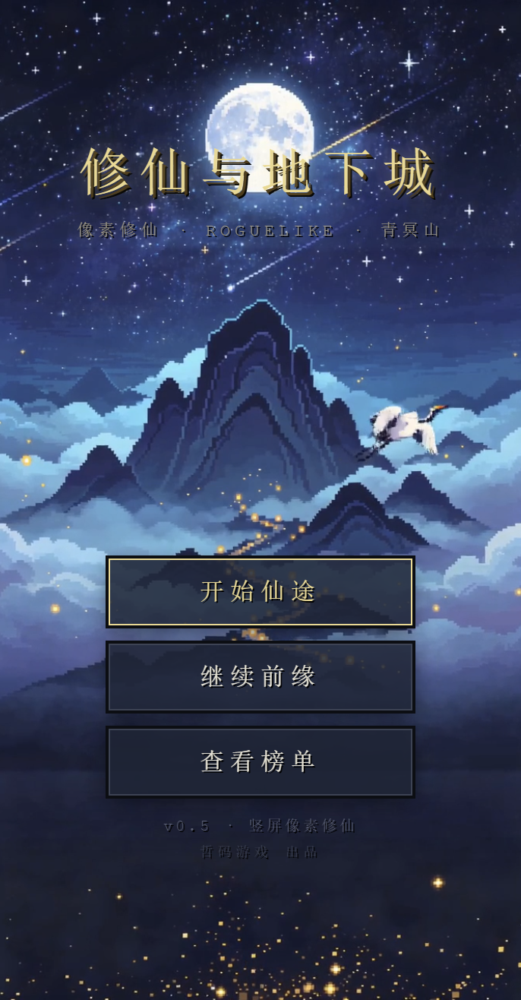
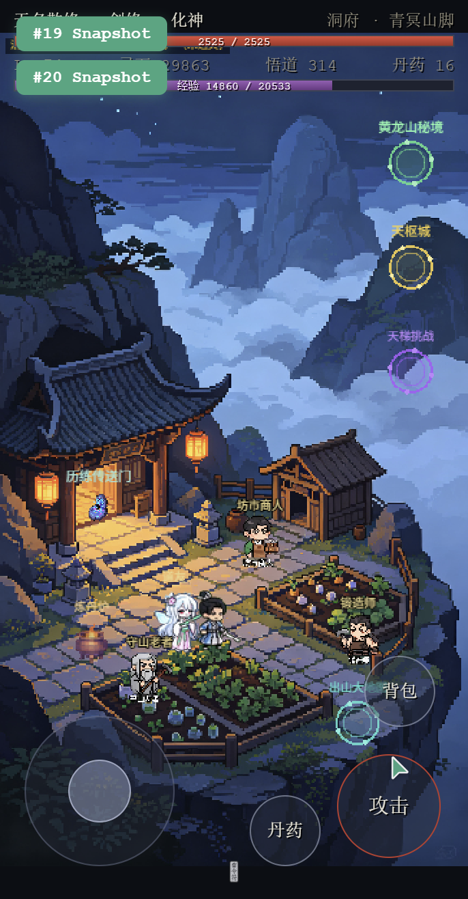
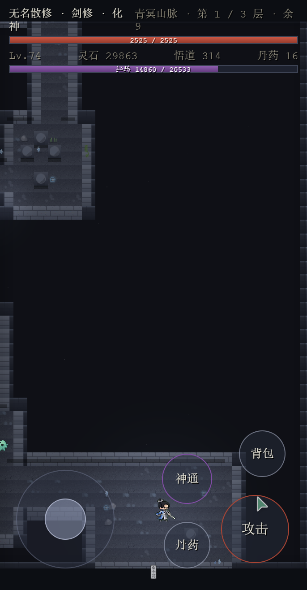
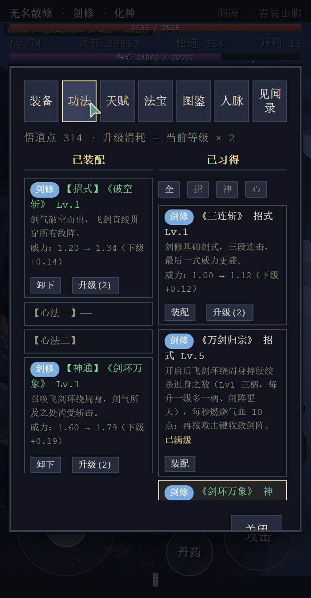
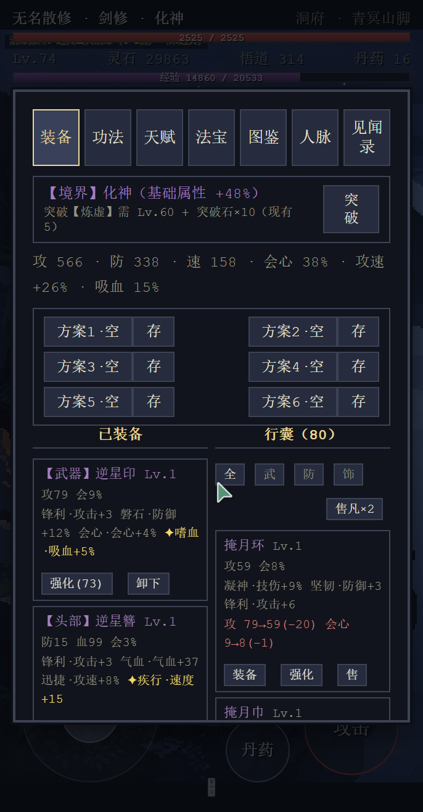
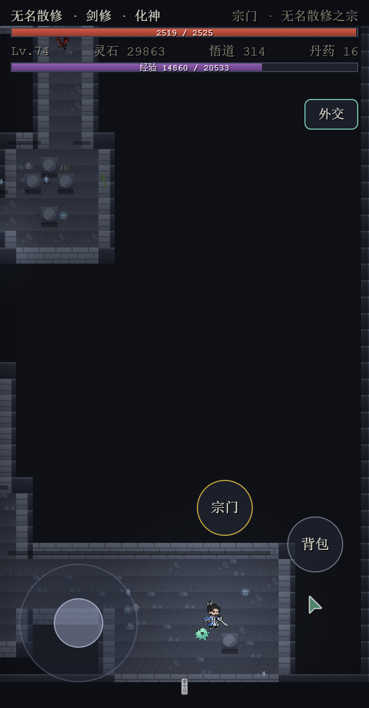
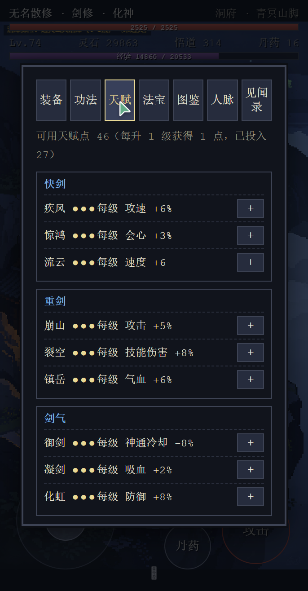
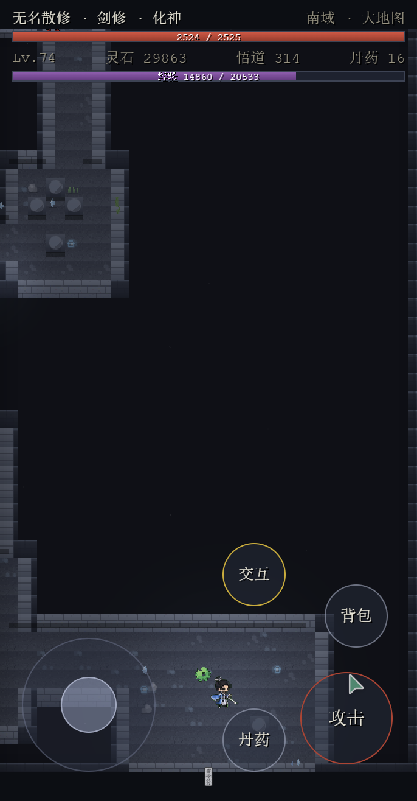

软件说明书
版本号：V0.5
2026年09月
《修仙与地下城》是一款以中国古典修仙文化为背景的Roguelike角色扮演游戏。游戏融合了传统修仙小说的境界突破、宗门养成、法宝炼制等元素，以及Roguelike地下城随机探险的玩法，为玩家提供丰富的修仙世界体验。
游戏采用竖屏像素风格设计，支持触屏操作，适配移动设备。包含3D与2D双渲染模式的大地图、随机生成的地下城迷宫、多样的怪物与Boss战、完整的宗门经营系统等丰富内容。
核心特色：
| 项目 | 要求 |
|---|---|
| 操作系统 | Android 6.0 及以上，或支持WebGL的现代浏览器 |
| 运行内存 | 2GB及以上 |
| 存储空间 | 300MB及以上 |
| 屏幕分辨率 | 竖屏 360×640 及以上 |
| 网络连接 | 无需联网，完全离线运行 |
| 运行平台 | Android APK 安装包 / H5 网页版 |
启动游戏后，首先进入加载页面，游戏资源加载完成后自动跳转至标题界面。在标题界面点击「开始游戏」按钮进入角色创建或继续上次游戏。

游戏主界面采用竖屏布局，自上而下分为以下区域：
位于屏幕顶部，显示玩家当前状态信息：
| 显示项 | 说明 |
|---|---|
| 角色名 | 玩家创建角色时输入的名字 |
| 修为境界 | 当前修为等级名称（如"炼气期"） |
| 经验条 | 当前经验值进度，满后可突破 |
| 灵石 | 游戏内货币，用于购买、建造等 |
| 时间 | 游戏内时辰显示 |
游戏主画面区域，根据所处场景不同显示不同内容。以下是洞府场景的实机画面：

根据所处场景不同显示不同内容：
位于屏幕底部，提供快捷功能按钮：
| 按钮 | 功能 |
|---|---|
| 角色 | 打开角色面板，查看属性、装备、功法 |
| 天赋 | 打开天赋面板，加点天赋和打通灵窍 |
| 行囊 | 打开背包，管理物品和装备 |
| 设置 | 打开设置面板，调节音量、切换渲染模式 |
首次进入游戏时，玩家需要创建角色。输入角色名称后，从五种职业中选择一种作为初始职业。不同职业的属性成长、初始装备和战斗风格各不相同。
以剑为道的修士，注重物理攻击和近战格斗。攻击方式以飞剑斩击为主，招式包含旋风斩、弧形斩、重击等。擅长连续输出，金丹期后可炼制「天地剑心」法宝，使每次攻击额外召唤飞剑。
冰霜系修士，以寒冰之力攻击敌人。招式以远程冰系法术为主，可造成减速和冰冻效果。擅长控制与远程输出，冰系技能可形成区域封锁。
雷法系修士，掌控天雷之力。攻击以闪电链和雷球为主，可造成范围连锁伤害。擅长群体清怪，雷系技能具有穿透效果。
魅惑系修士，以幻术和精神攻击为主。招式可造成魅惑效果使敌人自相残杀，同时具备生命吸取能力。擅长以弱胜强，适合策略型玩家。
纯法术系修士，精通五行法术。攻击以火球、冰锥、雷链等多种元素法术组合为主，可根据敌人弱点切换克制属性。擅长灵活应变，是最全面的法系职业。
游戏采用虚拟摇杆移动方式。在屏幕左下区域按住并拖动可控制角色移动方向。角色会朝拖动方向行走，松开手指停止移动。
地下城中遇到怪物时自动进入战斗。角色会自动攻击范围内的敌人，玩家只需控制走位躲避敌人攻击并寻找有利的攻击位置。部分招式在靠近敌人时自动触发。
当角色靠近可交互对象（NPC、宝箱、传送阵、建筑等）时，屏幕上会自动出现交互按钮。点击按钮即可执行对应的交互操作。NPC交互优先级高于建筑和出口交互。
修为是修仙的核心。玩家通过战斗和修炼获得经验值，经验满后可尝试突破到下一境界。共有七大境界：
| 序号 | 境界名称 | 解锁内容 |
|---|---|---|
| 1 | 炼气期 | 基础冒险，进入青冥山脉地下城 |
| 2 | 筑基期 | 解锁天赋系统，可进入更深的地下城 |
| 3 | 金丹期 | 解锁后天灵窍、法宝炼制、宗门创建 |
| 4 | 元婴期 | 解锁更多法宝，宗门功能扩展 |
| 5 | 化神期 | 高阶法宝精炼，秘境探索 |
| 6 | 炼虚期 | 极高属性成长，顶级内容 |
| 7 | 合体期 | 最终境界，全内容解锁 |
地下城是游戏的核心探险内容。每次进入地下城时，地图结构、怪物分布、宝箱位置均为随机生成，确保每次探险体验不同。
地下城包含以下元素：

战斗采用自动攻击模式，角色会自动攻击范围内的敌人。玩家通过控制走位来选择攻击目标和躲避伤害。
每种职业拥有不同的招式体系，共20种神通招式：
| 类型 | 招式举例 | 效果说明 |
|---|---|---|
| 近战斩击 | 旋风斩、弧形斩、重击 | 近距离物理伤害，范围攻击 |
| 飞剑系 | 飞剑分裂、剑阵 | 远程物理伤害，多发飞剑 |
| 元素法术 | 火球、冰锥、雷链 | 远程元素伤害，附带状态效果 |
| 特殊系 | 魅惑、生命吸取 | 控制敌人或恢复自身 |
| 范围技 | 冰封领域、烈焰风暴 | 大范围AOE伤害 |
招式可通过功法套装加成获得额外效果，不同套装组合产生多样战斗风格。
装备分为武器、防具、饰品三大类，按品质分为普通、精良、稀有、史诗、传说五个等级。高品质装备拥有更强的基础属性和附加词条。
功法套装系统：
装备面板采用左右分栏独立滚动设计，左侧显示已装备物品，右侧显示行囊物品，支持鼠标滚轮和触屏滑动操作。
功法面板显示已装配的功法套装和悟道点数，不同功法组合激活不同的套装效果。


金丹期后，玩家可消耗10000灵石创建宗门，开启宗门养成玩法。宗门系统包含丰富的经营内容。
宗门可建造14种功能建筑，每种建筑提供不同收益：
| 建筑 | 功能 |
|---|---|
| 聚灵阵 | 提升宗门灵气浓度，增加修炼速度 |
| 灵田 | 种植灵药，定期产出炼丹材料 |
| 丹房 | 炼制丹药，提供战斗消耗品 |
| 炼器坊 | 锻造装备，提升装备品质 |
| 矿脉 | 产出灵石和矿石 |
| 藏书阁 | 研习功法，解锁新招式 |
| 修炼室 | 弟子修炼场所，提升弟子修为 |
| 演武场 | 弟子切磋对战，提升战斗经验 |
| 灵兽阁 | 驯养灵兽，提供宗门守护 |
| 库房 | 存储宗门物资 |
| 山门 | 宗门入口，影响宗门声望 |
| 灵泉 | 恢复弟子体力 |
| 药园 | 高级灵药种植 |
| 核心大殿 | 宗门核心，等级影响所有建筑上限 |

宗门可招募弟子，弟子是宗门经营的核心。弟子拥有独立的属性、灵根、天赋和状态。
宗门运行中每隔一段时间会触发随机事件，带来额外收益或挑战：
金丹期后解锁法宝炼制。共有六大法宝，每种提供独特的战斗加成和宗门属性：
| 法宝名称 | 效果 |
|---|---|
| 天地剑心 | 剑修每次攻击额外召唤飞剑 |
| 万象宝镜 | 反射部分伤害，提升防御 |
| 净世莲华 | 攻击附带净化效果，驱散敌方增益 |
| 九龙神火罩 | 受击时释放火焰反击 |
| 混元一气塔 | 提升全属性，增加生命上限 |
| 乾坤鼎 | 提升炼丹和锻造成功率 |
法宝可精炼至+0~+9，每级提升基础属性15%和buff强度5%。法宝可装配到宗门圣物槽位（3个），为全宗门弟子提供buff加成。
天赋系统在筑基期解锁，每次升级获得天赋点可分配到不同天赋树上，提升角色各项能力。

后天灵窍系统在金丹期解锁，消耗灵石依次打通9个灵窍：
| 序号 | 灵窍名称 | 成功率 |
|---|---|---|
| 1 | 灵海 | 95% |
| 2 | 气海 | 88% |
| 3 | 神庭 | 81% |
| 4 | 百会 | 74% |
| 5 | 玉枕 | 67% |
| 6 | 夹脊 | 60% |
| 7 | 命门 | 53% |
| 8 | 丹田 | 42% |
| 9 | 泥丸 | 31% |
每打通一个灵窍大幅提升角色属性，境界每级额外增加3%成功率。打通失败仅消耗灵石，无其他惩罚。
达到特定境界突破时需经历天劫考验。天劫场景中玩家需在雷劫中存活一定时间，期间会有雷电随机劈落，玩家需躲避雷击。
世界地图分为五大域，每域有独特的风景和内容：
| 区域 | 特色 |
|---|---|
| 中域 | 天枢城所在地，传送枢纽 |
| 南域 | 新手区域，青冥山脉和多个秘境 |
| 西域 | 沙漠地形，楼兰秘境 |
| 东域 | 海域地形，海市蜃楼秘境 |
| 北域 | 冰原地形，冰原秘境 |
大地图支持3D与2D双渲染模式切换。3D模式使用Three.js渲染地形和立体建筑，2D模式使用视差雾气和平面地形。在设置面板可随时切换。

世界地图上分布着多个秘境，每个秘境是独立的特殊地下城：
| 秘境名称 | 特色 |
|---|---|
| 黄龙山 | 坚守战玩法，波次防御 |
| 万妖谷 | 妖兽聚集，高难度战斗 |
| 天剑冢 | 剑修圣地，飞剑系装备掉落 |
| 海市蜃楼 | 幻术迷宫，随机传送 |
| 古战场 | 远古遗迹，稀有材料 |
| 楼兰秘境 | 沙漠迷宫，火系装备 |
| 冰原秘境 | 冰系怪物，冰系装备 |
| 破碎仙宫 | 高难度挑战，顶级奖励 |
此外还有6个随机日常秘境：灵药园、古修洞府、矿脉秘境、魔修遗迹、妖兽巢穴、试炼秘境。
点击底部「角色」按钮打开。角色面板显示玩家完整信息：
点击底部「天赋」按钮打开。包含天赋树加点 和后天灵窍打通两个功能页。
点击底部「行囊」按钮打开。显示所有持有的装备和物品，可拖拽穿戴装备。装备和功法使用独立滚动容器，左右分栏设计。
点击底部「设置」按钮打开。提供以下选项：
| 设置项 | 说明 |
|---|---|
| BGM音量 | 调节背景音乐音量（0-100%） |
| 音效音量 | 调节游戏音效音量（0-100%） |
| 大地图模式 | 切换2D平面/3D幻境渲染 |
| 保存游戏 | 手动存档 |
| 返回标题 | 回到标题界面（自动存档） |
游戏采用自动存档机制，无需手动保存。
游戏包含完整的音频系统，共25首场景BGM和40余种程序化合成音效。
不同场景自动播放对应的背景音乐，进入场景时无缝切换：
| 场景 | BGM |
|---|---|
| 标题/加载页 | 仙途战歌 |
| 洞府/城镇 | 洞府清闲 |
| 青冥山脉 | 初踏仙途 |
| 幽冥沼泽 | 幽渊剑影 |
| 中域大地图 | 仙域天威 |
| 天枢城 | 仙域天威 |
| 南/西/东/北域 | 南境云隐/西域幻境/南洋仙踪/北域寒锋 |
| 破碎仙宫 | 碎穹仙途 |
| 无尽妖域 | 妖域贪途/妖域贪途变奏（每3层切换） |
| 宗门场景 | 仙宗晨钟 |
| 擂台/天梯 | 修仙擂台激战/变奏 |
| 渡劫场景 | 天劫降临 |
游戏使用Web Audio API程序化合成音效，无需额外音频文件。包含以下类型：
请确认设备系统版本符合要求（Android 6.0+），且存储空间充足。H5版请使用Chrome等现代浏览器。
首次进入游戏后点击屏幕任意位置可解锁音频。在设置面板确认BGM音量未设为0。Android设备请确认没有静音。
不会。游戏在退出时自动保存进度，包括当前场景和地下城楼层。下次打开游戏会恢复到退出前的位置。
在设置面板中找到「大地图模式」选项，选择「2D平面」或「3D幻境」即可切换。切换后场景会重新加载。
达到金丹期后，在世界地图找到合适位置，点击「开宗立派」按钮，输入宗门名称（最多12字），消耗10000灵石即可创建。
金丹期后可在宗门炼器坊炼制法宝。需要收集对应材料，炼制成功后获得法宝。法宝可通过精炼提升等级（+0至+9）。
— 《修仙与地下城》V0.5 软件说明书 —
本说明书版权归著作权人所有